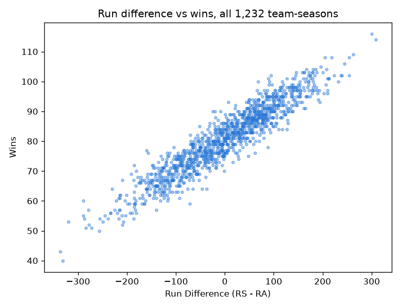
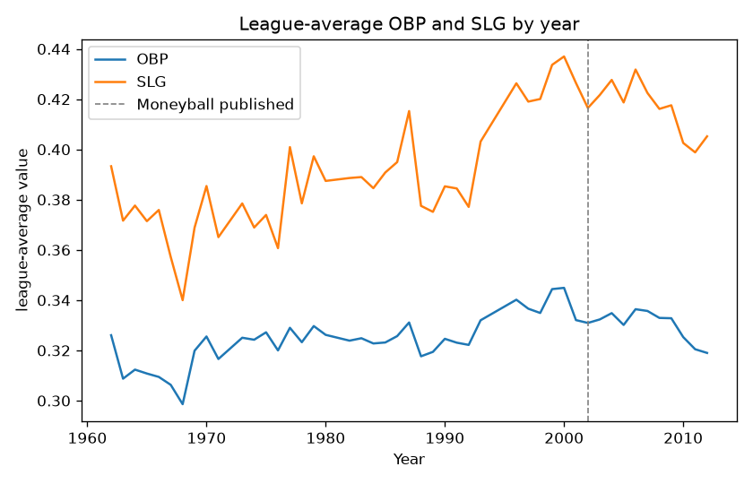
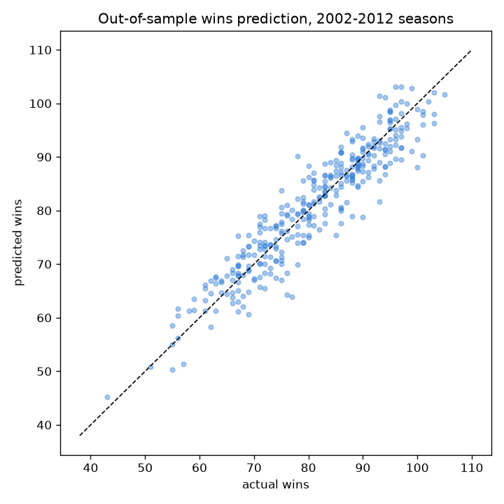
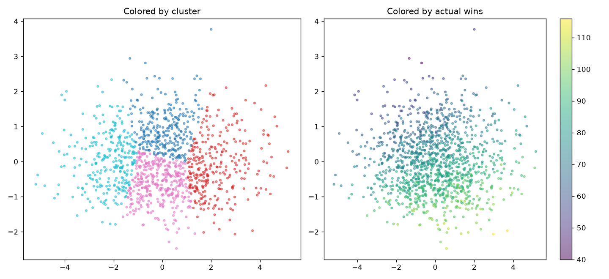

Sabermetrics: Did the Market Catch On to Moneyball?
1,232 team-seasons (1962-2012), the classic Moneyball case study, the 2002 Oakland A's started valuing on-base percentage over batting average. Data through 2012 makes it possible to answer a question the 2002 snapshot alone can't: once the strategy became public, did the rest of the league catch on?
The data


Did the market catch on?
The core Moneyball insight: on-base percentage predicted runs scored better than the stats teams were actually paying for at the time. If that edge was a real market inefficiency, it should shrink once everyone knew about it.
| Period | OBP coefficient | SLG coefficient | OBP/SLG ratio |
|---|---|---|---|
| Pre-2002 | 2,738 | 1,585 | 1.73 |
| 2002 and after | 2,553 | 1,818 | 1.40 |
A genuine out-of-sample test
Fitting only on 1962-2001, then evaluating on every season from 2002 onward, gives a true forecast of seasons the model never saw, rather than a prediction built partly on data already in hand.

A model that never saw a single post-2001 season still predicts wins to within about 3 games on average, a genuine, honest validation of the core insight, not just a single-team hand-check.
Unsupervised: batting profile alone sorts good teams from bad
Clustering all 1,232 team-seasons by OBP, SLG, runs scored, and runs allowed, no wins or playoff data involved, then checking against real outcomes afterward.

A real, substantial spread (mean wins from about 70 to 88, playoff rate from 0.4% to 37.5%) recovered entirely from offensive profile, with the two clustering methods agreeing reasonably well with each other.
Key findings
- The Moneyball edge shrank, but didn't disappear, OBP's coefficient advantage over SLG dropped from 1.73x to 1.40x after 2002, a market inefficiency partly arbitraged away once it became public.
- A model that never saw a post-2001 season predicts wins to within about 3 games out-of-sample, a real forecast, not just an in-sample lookback.
- Batting average's multicollinearity with OBP/SLG was real but moderate (VIF 4.2), the flipped coefficient sign it causes looks more dramatic than the underlying collinearity actually is.
- Batting profile alone sorts team-seasons into real success tiers without ever using wins or playoff data, a 0.4% to 37.5% playoff-rate spread across just 4 clusters.
Future work
- Extend the market-efficiency check to individual player valuation (salary vs OBP/SLG contribution) rather than only team-season aggregates.
- Bring in pitching and defensive metrics beyond runs allowed to build a fuller team-strength model.
- Try a similar before/after market-efficiency analysis for a more recent sabermetric innovation (exit velocity, launch angle) to see if the same pattern of edges eroding over time repeats.